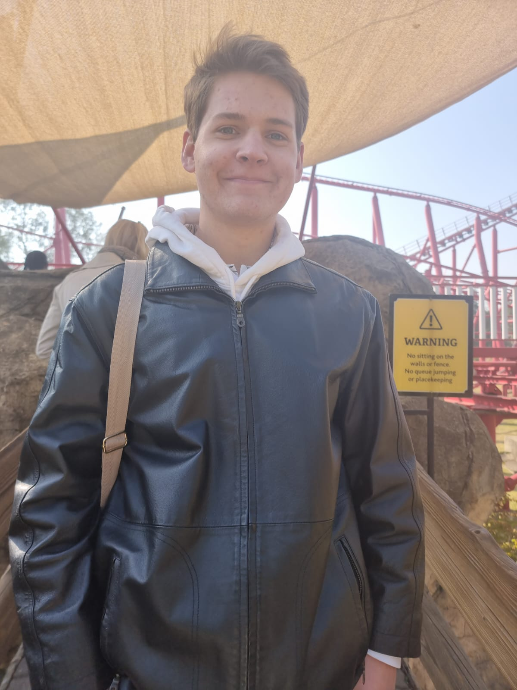

Brent Reginald Welsford | WDD 130
Hello everyone! My name is Brent Reginald Welsford and I live in Johannesburg, South Africa. I love music and spending time with family and friends, my favorite color is Black.
Hello everyone! My name is Brent Reginald Welsford and I live in Johannesburg, South Africa. I love music and spending time with family and friends, my favorite color is Black.